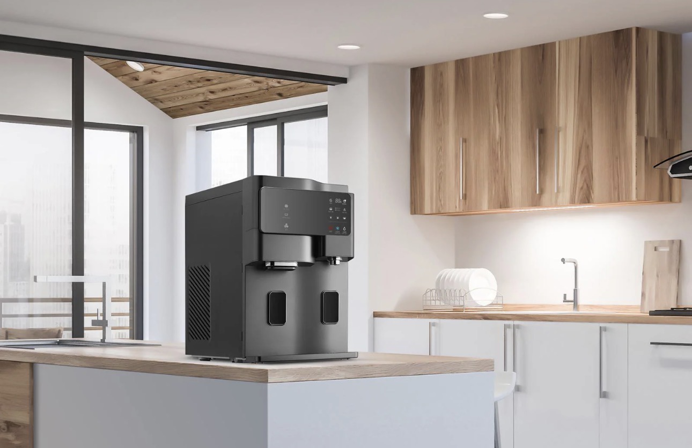

Welche Systeme gibt es, was wird gefiltert und welche Lösung passt zu Ihrem Zuhause?
Ein gutes Wasserfiltersystem kann den Geschmack verbessern, den Alltag erleichtern und dabei helfen, weniger Flaschen zu kaufen oder zu tragen.
Gefiltertes Wasser kann angenehmer schmecken – ideal für Trinken, Tee, Kaffee und Kochen.
Je nach System erhalten Sie kaltes, heißes oder lauwarmes Wasser direkt auf Knopfdruck.
Weniger Kisten schleppen, weniger Plastikflaschen und mehr Bequemlichkeit im Alltag.
Je nach Modell und Wasserqualität können verschiedene Stoffe im Wasser reduziert werden.
*Die genaue Filterleistung hängt vom gewählten System, der Wasserqualität und der Nutzung ab.
Nicht jeder Haushalt braucht dieselbe Lösung. Entscheidend sind Bedarf, Platz, Nutzung und Komfortwunsch.
Sehr feine Filterung für klares Trinkwasser. Besonders interessant, wenn Sie Wert auf hohe Filterleistung legen.
Produkte ansehen →Individuelle Lösungen für feste Installation unter der Spüle – unauffällig und praktisch im Alltag.
Jetzt beraten lassen →Wir helfen einzuschätzen, welche Lösung zu Ihrem Haushalt, Budget und Nutzungsverhalten passt.
Jetzt beraten lassen →Keine automatische Bestellung, kein komplizierter Prozess. Erst informieren, dann ruhig entscheiden.
Schreiben Sie kurz, welches System Sie interessiert oder wofür Sie eine Lösung suchen.
Sie erhalten eine verständliche Einschätzung – ohne Verkaufsdruck und ohne Fachchinesisch.
Danach entscheiden Sie in Ruhe, welches System zu Ihnen passt.
Ja. Die Anfrage ist unverbindlich. Sie erhalten zuerst eine Einschätzung und entscheiden danach in Ruhe.
Das hängt von Ihrem Wasser, Geschmack und Alltag ab. Viele entscheiden sich für ein System, weil sie weniger Flaschen kaufen und jederzeit gefiltertes Wasser zuhause nutzen möchten.
Viele Systeme sind schnell einsatzbereit oder lassen sich unkompliziert installieren. Welche Lösung passt, klären wir in der Beratung.
Für kleinere Haushalte reicht oft ein kompaktes System. Familien profitieren meist von Komfort-Systemen mit heißem, kaltem oder lauwarmem Wasser.
Nein. Die Anfrage ist unverbindlich. Sie erhalten zuerst eine Beratung und entscheiden danach in Ruhe.
Auf der Startseite finden Sie die aktuellen Systeme, Preisorientierung und die Möglichkeit zur unverbindlichen Anfrage.